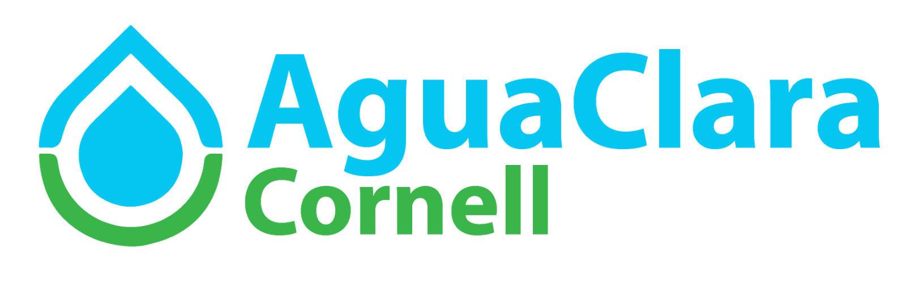

Places I've Worked At
Capital One
Incoming Software Engineering Intern | Jun 2019 - August 2019
Will be starting this summer at the New York City Office!
AguaClara
Software Developer (Subteam Lead) | Sep 2017 - Present
Developed a script that analyzes a continuous stream of thousands of data points concerning water quality and utilizes this analysis to send automated bimonthly emails personalized to inform plant operators on areas of need within individual water filtration plants.
Utilized Plotly to design the data visualization of over 5,000 data points regarding treatment plants located across Honduras to allow easier data interpretation.
Implemented the AguaClara Data Visualization platform using the Angular framework to create a more modular, extensible, and future-proof model-view-controller architecture.
StartupTree
Software Engineering Intern | Jan 2018 - Aug 2018
Utilized the Django framework for full-stack development of site features, including the development of a live messaging pop-up box and UI upgrades.
Implemented backend functionality such as connections between different users on the platforms, file uploads, and categorically sorting users to improve accuracy of data storage for over 60,000 users.
Added, deleted, or changed 2,500+ lines of code.